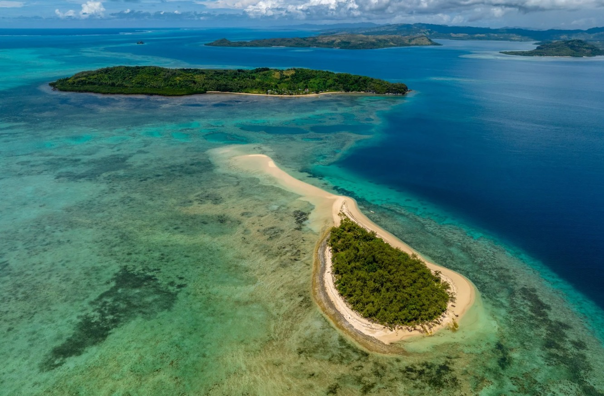
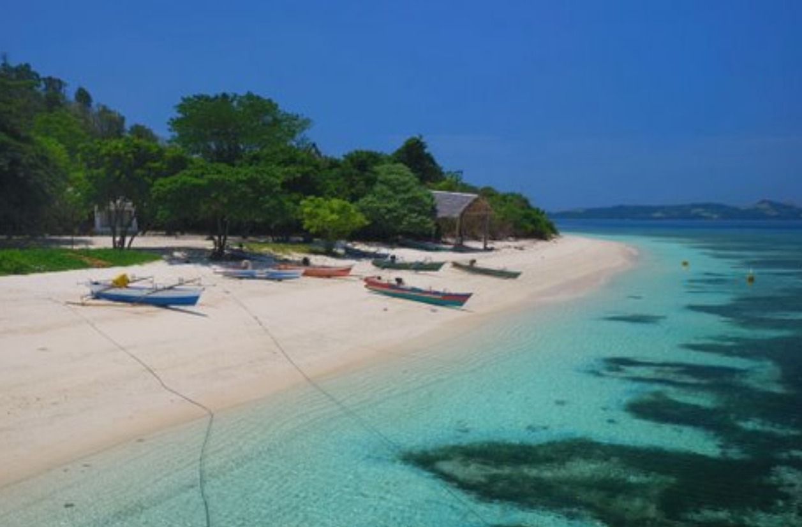
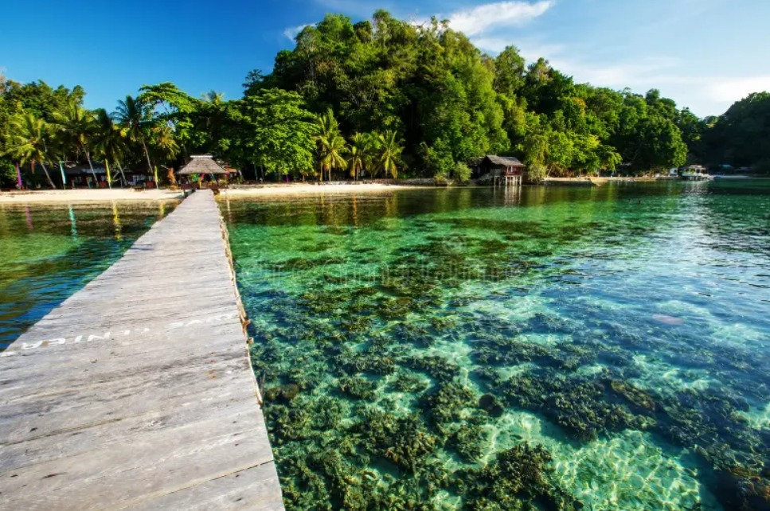
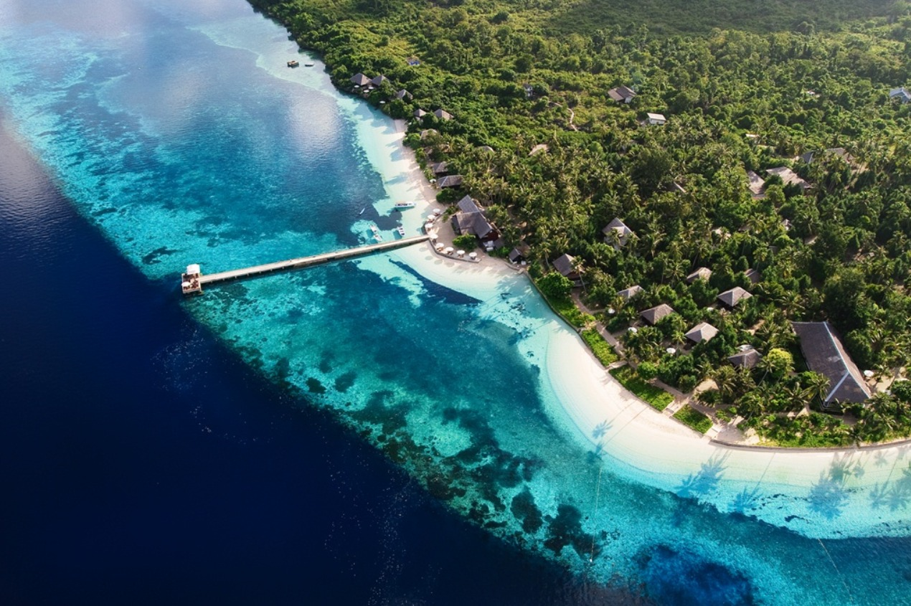
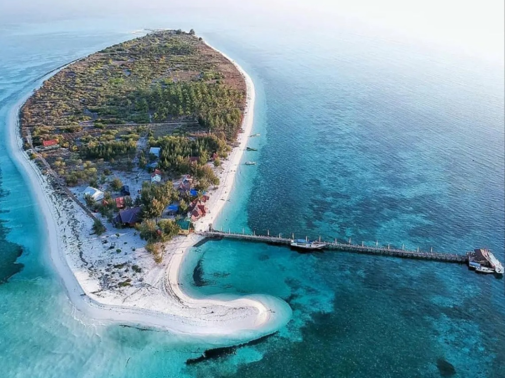
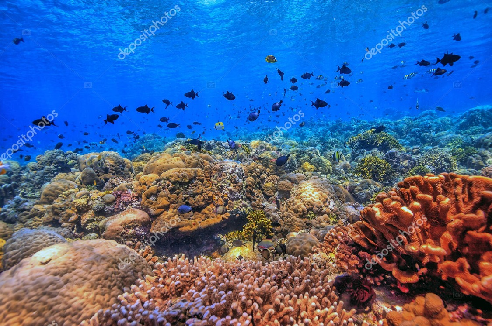

Memiliki keanekaragaman hayati laut yang kaya, termasuk terumbu karang yang indah dan berbagai spesies ikan tropis. Taman Laut Nasional Bunaken merupakan salah satu destinasi utama untuk snorkeling dan menyelam, menawarkan pengalaman bawah laut yang menakjubkan bagi para pengunjung.

Terkenal dengan pasir putih halusnya dan perairan kristal. Kawasan ini merupakan zona penyangga penting bagi ekosistem terumbu karang di wilayah Likupang.

Satu-satunya tempat di Indonesia yang memiliki tiga jenis terumbu karang utama: karang penghalang (barrier), karang tepi (fringing), dan atol.

Dikenal sebagai jantung dari Segitiga Terumbu Karang dunia. Wakatobi merupakan situs warisan dunia UNESCO yang melindungi ekosistem karang tepi, karang penghalang, hingga atol terbesar di Indonesia.

Kawasan konservasi ini memiliki hamparan atol yang sangat luas dengan ekosistem terumbu karang yang sangat terjaga. Tempat ini menjadi habitat penting bagi berbagai jenis kura-kura laut dan kima raksasa.

Selain terkenal sebagai ibukota mahluk laut unik di dunia, Selat Lembeh juga memiliki titik-titik konservasi terumbu karang yang menjadi rumah bagi spesies endemik dan biota laut langka.
